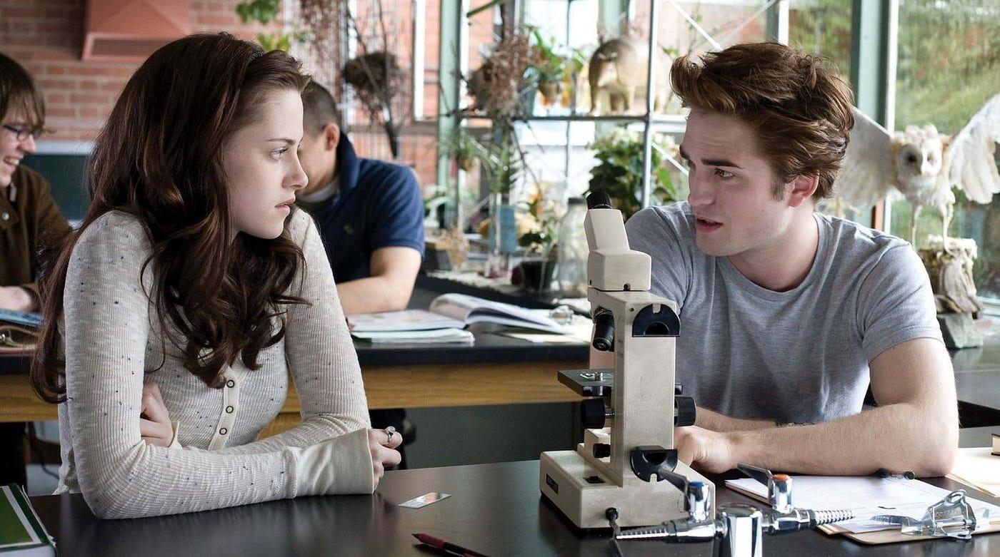
01
LOS PRIMEROS DÍAS
Biología.
El lugar donde dos personas que no deberían tener nada en común empiezan a observarse demasiado.
BELLA · EDWARD
DESDE AQUEL PRIMER ENCUENTROUna historia que comenzó en Forks y terminó desafiando el tiempo.
Su historia2005 · TWILIGHT
Bella llega a Forks esperando una vida completamente normal. Entonces conoce a Edward Cullen.
FORKS · WASHINGTON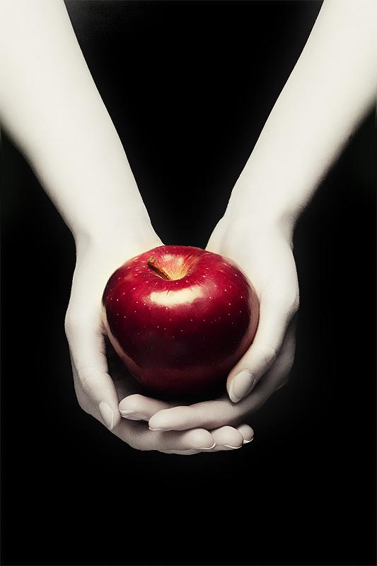
FRUTO PROHIBIDO
01El lugar donde dos personas que no deberían tener nada en común empiezan a observarse demasiado.
En el bosque desaparecen las excusas. Bella ya conoce su secreto y Edward deja de intentar esconder lo que es.
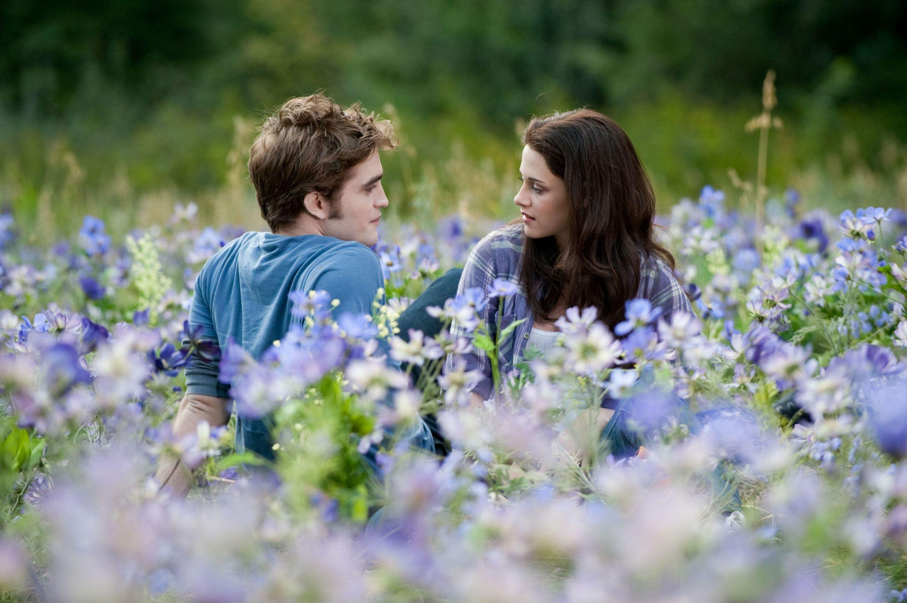
02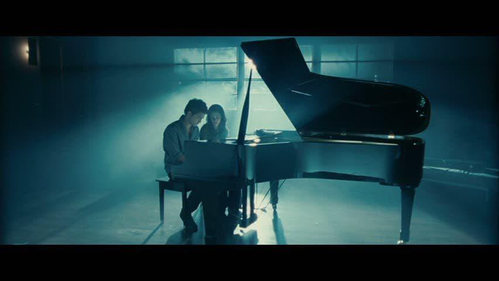
03Algunas partes de su historia no necesitan una conversación. Edward encuentra otra forma de decir lo que siente.
BAILE DE FORKS HIGH SCHOOL
Bella ya sabe qué quiere. Edward todavía intenta convencerla de que una vida humana puede ser suficiente.
TWILIGHT · 20082009 · NEW MOON
Edward cree que alejarse es la única forma de proteger a Bella. Para ella, su ausencia transforma por completo los meses que siguen.
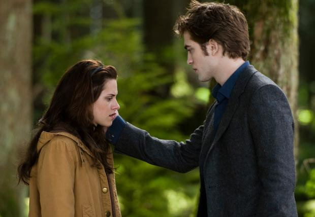
Lo que para Edward debía mantenerla a salvo termina dejando un vacío que Bella no sabe cómo llenar.
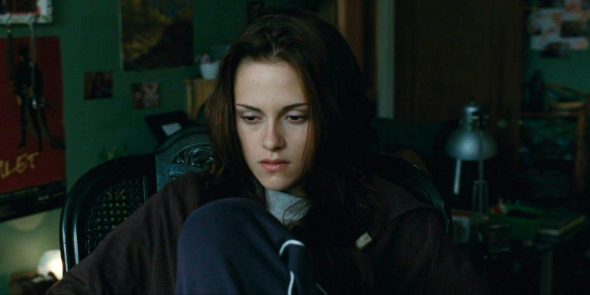
EL TIEMPO PASA
VOLTERRA · ITALIA
Después de meses separados, Bella cruza la plaza de Volterra para llegar hasta Edward antes de que sea demasiado tarde.
JUNTOS OTRA VEZ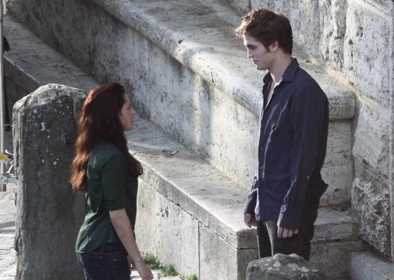
2010 · ECLIPSE
Ya no se trata de si Bella quiere estar con Edward. Se trata de todo lo que está dispuesta a elegir para hacerlo.
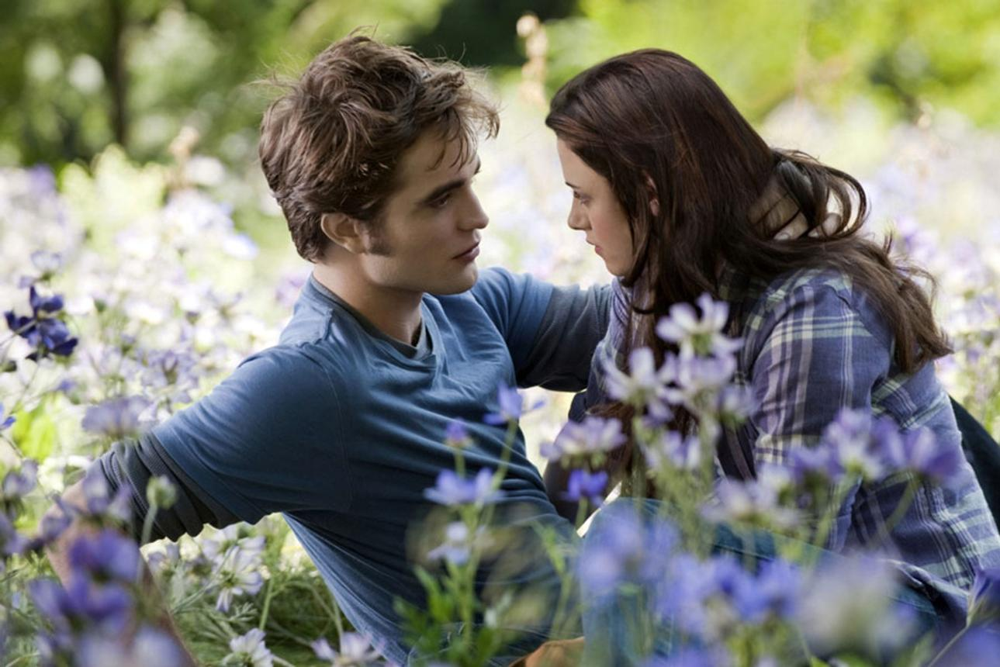
FORKS · WASHINGTONBella comprende que su decisión nunca fue simplemente entre Edward y Jacob. También está eligiendo entre dos vidas completamente distintas.
LA PROPUESTA
Antes de darle la eternidad que Bella pide, Edward quiere algo primero: una vida elegida juntos.
PASÁ EL CURSOR SOBRE EL ANILLO →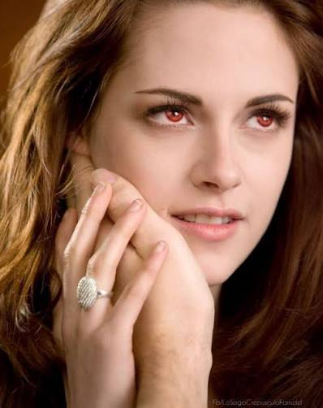
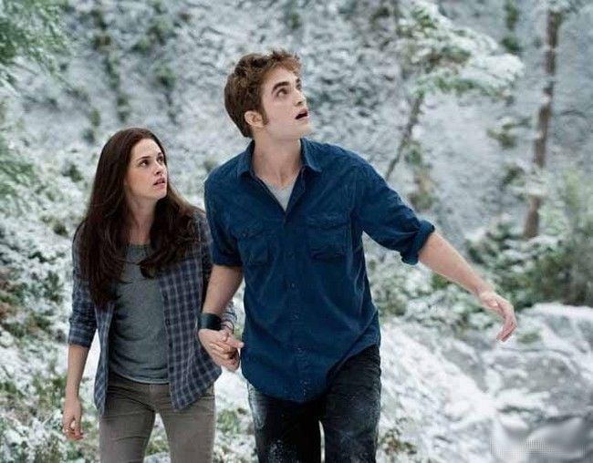
LA ÚLTIMA BATALLA
Después de todo lo que intentó separarlos, Bella deja de preguntarse qué vida debería tener y empieza a preparar la que eligió.
SIGUIENTE · BREAKING DAWN2011 · BREAKING DAWN · PARTE 1
Después de elegir una vida juntos, Bella y Edward finalmente llegan al momento que parecía imposible cuando se conocieron en Forks.
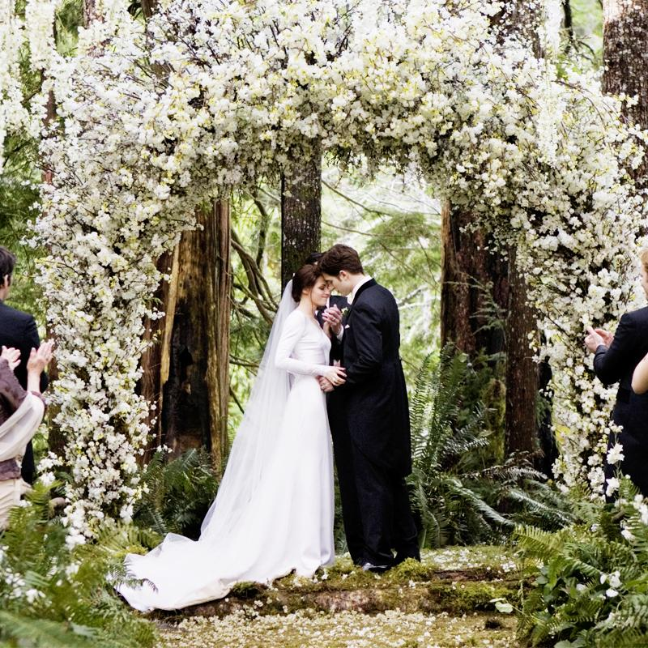
En medio del bosque, rodeados por las personas que forman parte de sus dos mundos, Bella y Edward dejan de imaginar el futuro y empiezan a vivirlo.
BELLA · EDWARD
Lo que empezó con miradas incómodas en una clase de biología ahora los encuentra frente a frente, eligiéndose sin una fecha de final.
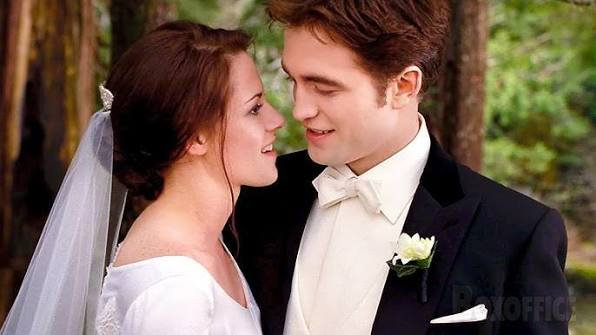
RECIÉN CASADOS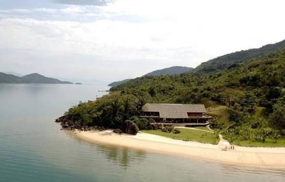
ISLA ESME · BRASIL
Lejos de Forks y de todo lo que los persiguió durante años, por un momento su historia parece pertenecer solamente a ellos.
JUST MARRIED · ISLE ESMEDos piezas. Dos colores. Una imagen que anticipa que su historia todavía está a punto de cambiar.
PASÁ EL CURSOR SOBRE LA IMAGEN →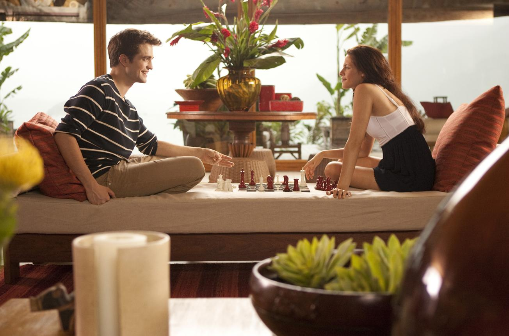
ALGO CAMBIÓ
Lo que comenzó como una luna de miel cambia el futuro que Bella y Edward habían imaginado para los dos.
El nacimiento de Renesmee lleva a Bella al límite. Para salvarla, Edward finalmente debe hacer aquello que durante tanto tiempo intentó evitar.
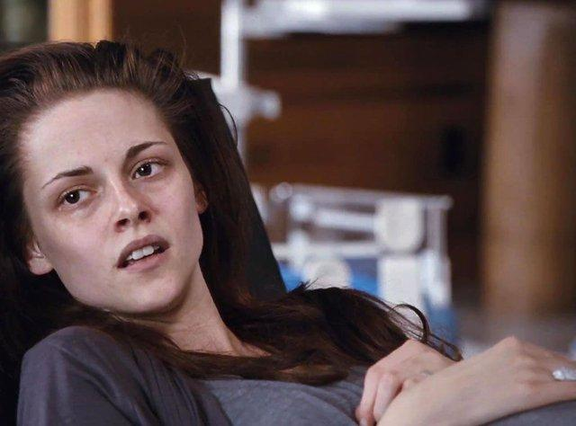
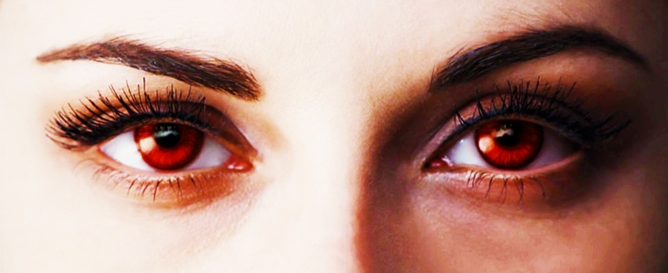
PASÁ EL CURSOR PARA DESPERTARLA
INMORTAL
2012 · BREAKING DAWN · PARTE 2
Por primera vez, Bella despierta en un mundo que parece hecho para ella. Todo es más intenso, más preciso y completamente diferente.
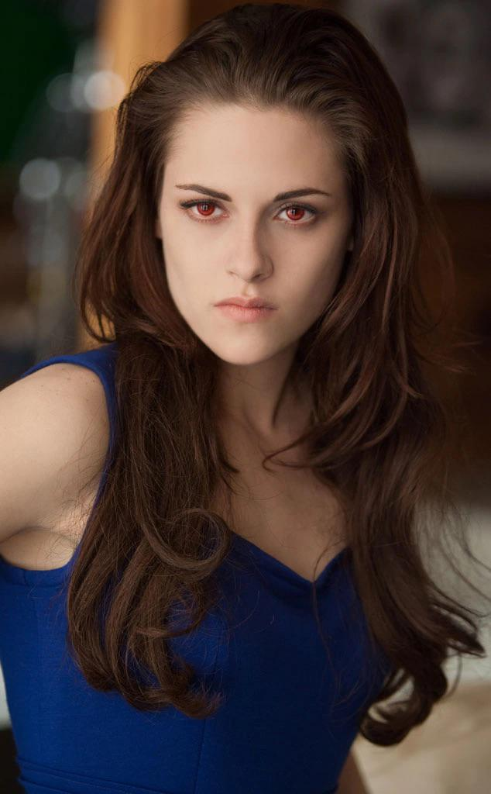
RECIÉN NACIDALa transformación no la convierte en otra persona. Por primera vez, Bella siente que su cuerpo y la vida que eligió finalmente encajan.

BELLA · EDWARD · RENESMEE
Después de todo lo que tuvieron que atravesar, la eternidad deja de ser solamente una promesa entre Bella y Edward. Ahora también existe Renesmee.
SU NUEVA VIDA
Una casa en el bosque, una hija y todo el tiempo que antes parecía imposible. Bella finalmente encuentra un lugar que siente completamente suyo.
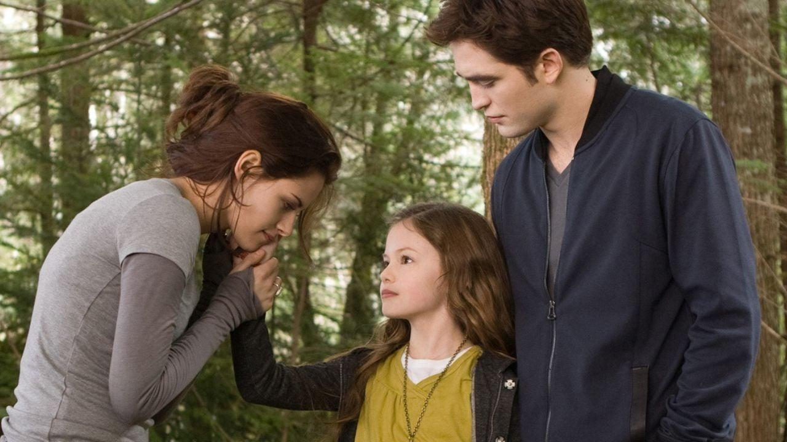
FORKS · WASHINGTON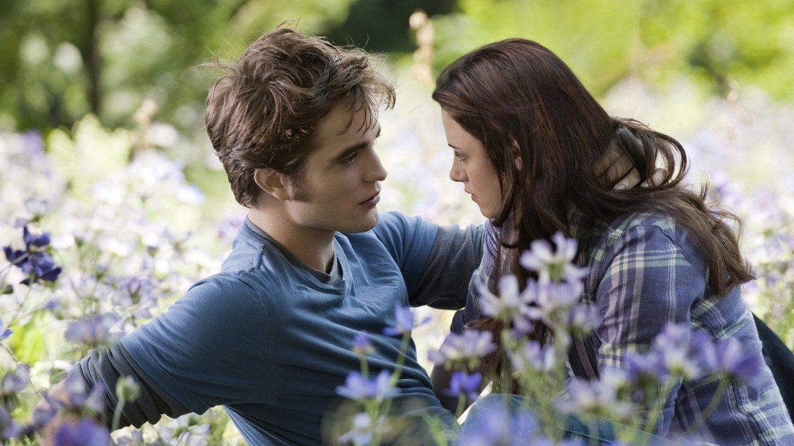
Regresan al lugar que marcó el comienzo de su historia. Pero esta vez Bella ya no tiene que imaginar cómo sería compartir la eternidad con Edward.
Bella tiene algo que nunca antes había podido darle a Edward: la posibilidad de ver su historia exactamente como ella la recuerda.
SUS RECUERDOS ↓Todo lo que ella recuerda.